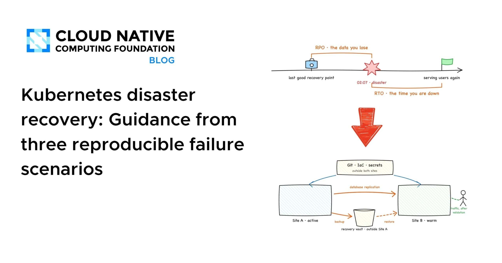
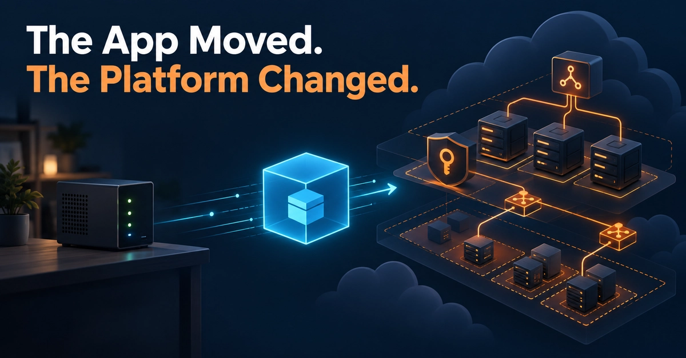
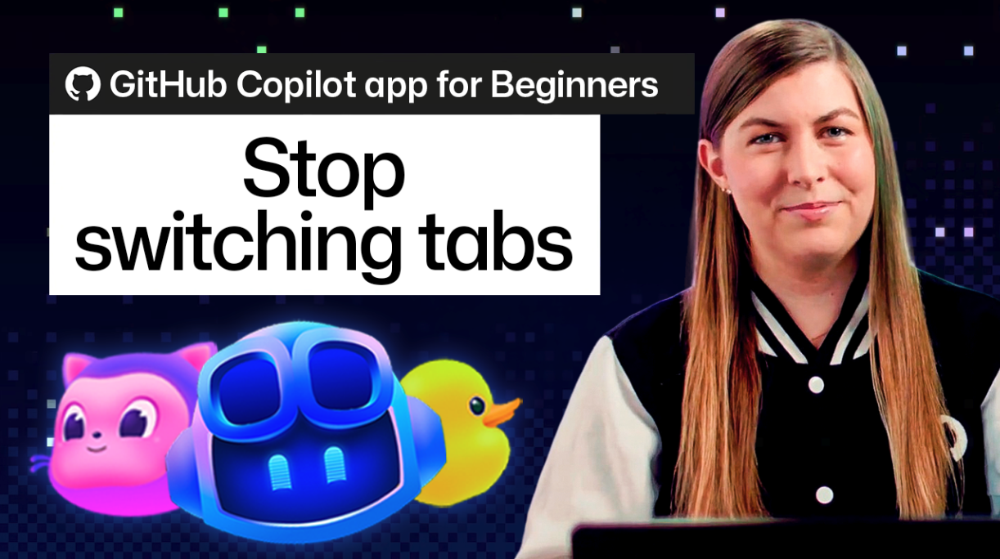
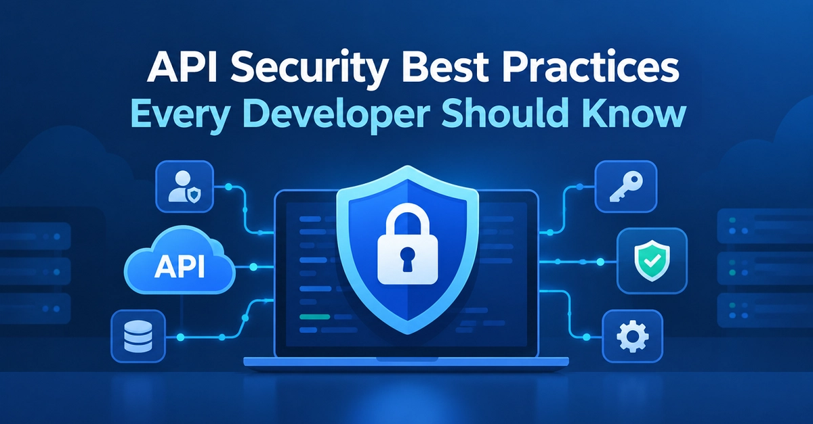
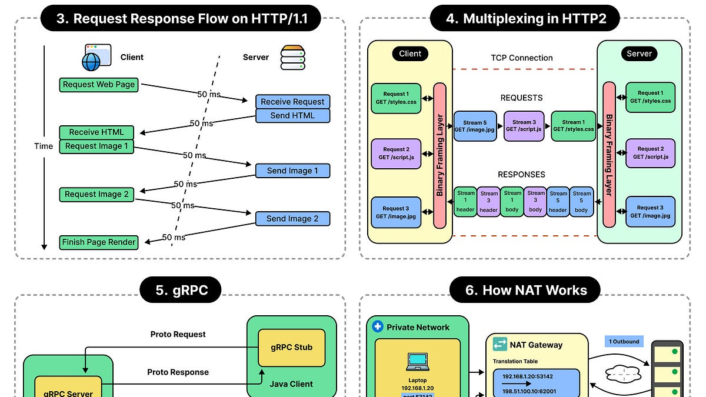
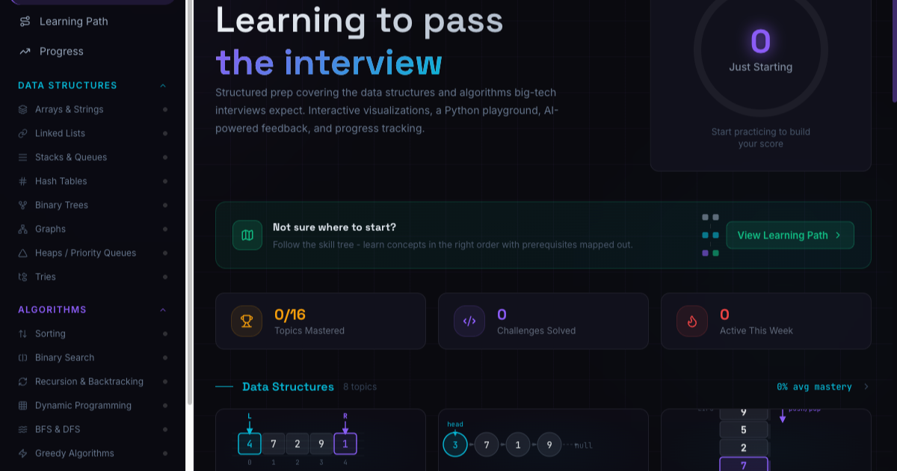
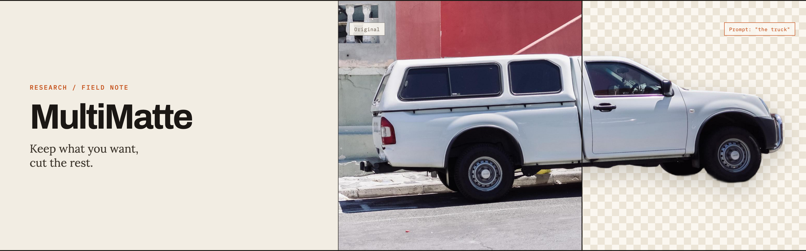

🔥 Top 3 (must read)
Shopify is moving from React Native back to Swift and Kotlin
(HN discussion, 832 points) Shopify went all-in on React Native in 2020 to stop building features twice and let devs work across the stack. Now they are moving back to separate native codebases, and they explain what did not work out. Why it matters: you run Flutter apps. This is the best real-world case study of the year on cross-platform costs, and the 549-comment thread is full of people who made the same decision either way.
The Pulse: tech companies move to open AI models
Uber, Pinterest, Stripe, Coinbase, Ramp and AT&T are cutting AI bills a lot by dropping proprietary models and using "model routing" (send each request to the cheapest model that can handle it). The piece looks at how these teams decide which work needs a top model and which does not. Why it matters: as an EM this is the cost side of AI adoption. It gives you concrete company examples to bring to a budget talk.

Kubernetes disaster recovery: guidance from three reproducible failure scenarios
The CNCF walks through three failures that show the gap between "we have backups" and "we can actually recover". Every scenario runs on a laptop from a lab repo. Why it matters: SRE practice you can test hands-on, not just read about. Good input for a team game day.

🛠 Tools & releases
Any Nix package, live in your browser
trynix.dev boots a full x86_64 Linux VM in the browser via WebAssembly (qemu-wasm), then loads any Nix package into it. Handy for trying a CLI tool without installing anything.
S
Kubernetes v1.37: Scheduler Preemption for In-Place Pod Resize (Alpha)
builds on in-place Pod resize (GA in v1.35). The scheduler can now evict lower-priority pods so a running pod can grow its CPU/memory without a restart.
K
My Kubernetes app moved to EKS unchanged. Everything around it didn't.
home-lab to EKS with zero app changes, but three wrong assumptions about networking, node size and AWS access. Argo CD fixed a manual scaling drift in 5 seconds.

🤖 AI for developers
GitHub Copilot app for beginners: using the diff, terminal, and browser
how to review agent-written code with diff, terminal and web preview side by side, instead of tab-hopping. Useful if your team is picking a review flow for agent output.

The Pulse: tech companies move to open AI models
see Top 3. Model routing as a cost strategy.
👔 Engineering & teams
API security best practices every developer should know
12 basics for REST APIs. Nothing new for a senior dev, but a good checklist to hand to a team or to use in code review.

A guide to application networking basics
ByteByteGo primer on networking as it applies to app and service design. Good onboarding material.

🎯 For me
Shopify back to native is the one to read in full today. It maps directly onto the "why Flutter, and for how long" question. Note what they list as the real costs: chasing upstream bugs, platform features arriving late, and devs not really working across the stack in practice.
Model routing for AI costs (Pragmatic Engineer) is a ready-made EM talking point for how the team uses coding agents and LLM APIs.
K8s disaster recovery lab fits your infra/SRE interest and is runnable on a laptop.
Nothing today on Playwright, Maestro, or Node.js/TypeScript releases.
💡 App ideas & indie builds
What if the speed of light was 5 km/h?
(HN, 570 points) — an interactive simulation that makes relativity visible by slowing light down to walking speed. Problem solved: physics is hard to feel, not just hard to read. Inspiration: a single playful "what if" slider can carry a whole app and go viral.
R
I couldn't afford interview prep, so I built a free alternative
(HN) — free interview practice for people priced out of paid prep courses. Problem solved: paid prep costs hundreds of dollars. Inspiration: "I could not afford X, so I built it" is a strong founder story, and the 49 comments debate how to keep it free.

Syq – copy files between machines fast (better than rsync)
(HN) — a file sync tool that claims to beat rsync on speed. Problem solved: moving large files between dev machines is still slow and fiddly. Inspiration: old tools with known pain points are a safe place to build something small and useful.
G
MultiMatte, a promptable image background removal model
(HN) — remove backgrounds by describing what to keep in text, instead of masking by hand. Problem solved: product photos and avatars need clean cut-outs at scale. Inspiration: a focused model wrapped in a simple API is a sellable indie product.

🎓 Try this
Clone the lab repo from the CNCF Kubernetes disaster recovery post and run one of the three failure scenarios on your laptop. Time how long it takes you to recover. If it is longer than you expected, that is your next game-day topic for the team.